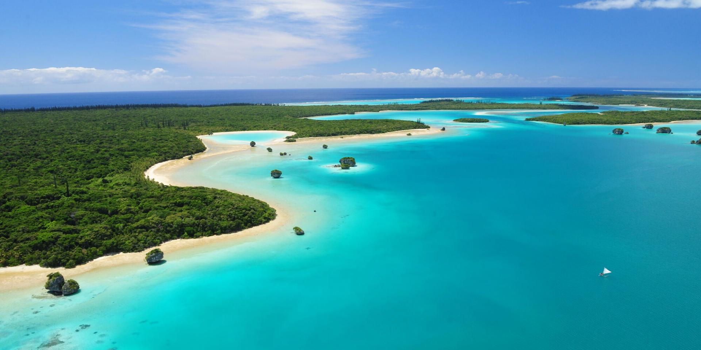
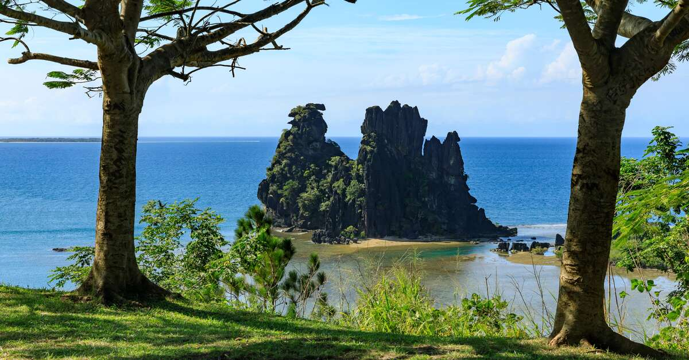
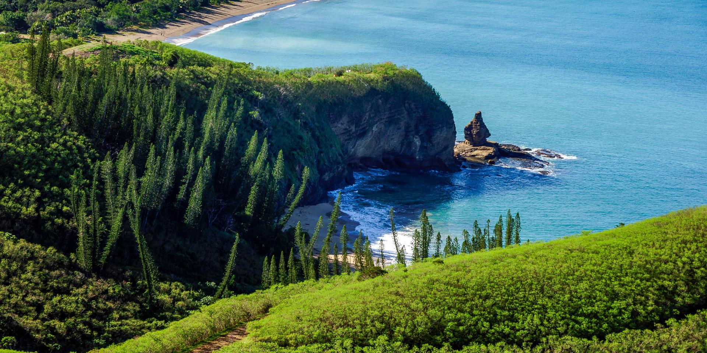
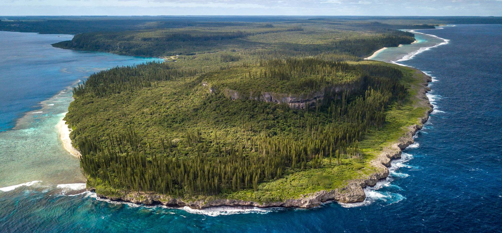

Découvrez la Nouvelle-Calédonie avec CalédoTours
Bienvenue chez CalédoTours, votre agence de voyage spécialisée dans les séjours en Nouvelle-Calédonie. Nous vous proposons des circuits uniques pour explorer les merveilles de ce territoire d'exception.
Nos Destinations
| Destination | Durée | Prix | Niveau |
| Île des Pins | 3 jours | 30 000 XPF | Facile |
| Hienghène | 4 jours | 30 000 XPF | Modéré |
| Bourail | 2 jours | 20 000 XPF | Facile |
| Îles Loyauté | 7 jours | 75 000 XPF | Difficile |
1- Île des Pins

Description :
Surnommée « l’île la plus proche du paradis », l’Île des Pins offre un lagon turquoise, des plages de sable blanc et une nature préservée.
Activités proposées :
- Excursion en pirogue traditionnelle
- Snorkeling dans la
- Randonnée au pic N'Ga
Durée & Prix :
Durée : 3 jours / Prix à partir de : 25 000 XPF
2- Hienghène

Description :
Hienghène, sur la côte est, est célèbre pour ses falaises de roches noires, ses paysages tropicaux et son ambiance culturelle kanak.
Activités proposées :
- Kayak autour de la Poule et du Sphinx
- Visite de la tribu de Lindéralique
- Randonnée dans la vallée de la Tchamba
Durée & Prix :
Durée : 4 jours / Prix à partir de : 30 000 XPF
3- Bourail

Description :
Située sur la côte ouest, Bourail est connue pour ses paysages sauvages, ses plages emblématiques et son patrimoine culturel riche.
Activités proposées :
- Découverte de la plage de Poé et du lagon UNESCO
- Sortie en VTT ou quad dans la vallée
- Visite du musée de Bourail
Durée & Prix :
Durée : 2 jours / Prix à partir de : 20 000 XPF
4- Îles Loyauté

Description :
Les Îles Loyauté, situées au large de la côte est, sont réputées pour leur beauté naturelle préservée et leur richesse culturelle unique.
Activités proposées :
- Excursion en bateau vers les îles voisines
- Visite des villages traditionnels
- Observation de la faune marine
Durée & Prix :
Durée : 7 jours / Prix à partir de : 75 000 XPF